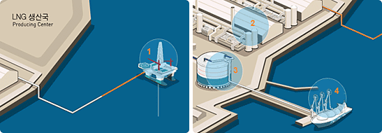
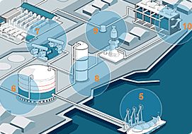
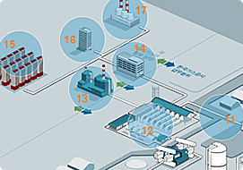

사업체계
해외 원산지 공정 1~4
천연가스는 해외원산지에서 액화천연가스(LNG)상태로 KOGAS에 의해 도입됩니다.
KOGAS는 이 LNG를 다시 기화하여 발전소 등지에 직접 공급하거나 일반도시가스회사에 공급하게 됩니다.

- 채취 및 정제
- 생산국 액화설비
- 생산국 저장탱크
- 선적설비
KOGAS 공정(도매업) 5~10

천연가스는 해외 원산지에서 액화천연가스(LNG)상태로 KOGAS에 의해 도입됩니다. KOGAS는 이 LNG를 다시 기화하여 발전소 등지에 직접 공급하거나 일반도시가스회사에 공급하게 됩니다.
- 하역설비
- 저장탱크
- 증발가스 압축기
- 액화설비
- 2차펌프
- 기화기
도시가스사(소매업) 11~17

천연가스는 해외 원산지에서 액화천연가스(LNG)상태로 KOGAS에 의해 도입됩니다. KOGAS는 이 LNG를 다시 기화하여 발전소 등지에 직접 공급하거나 일반도시가스회사에 공급하게 됩니다.
 코가스배관망
코가스배관망- 공급관리소
- 발전소
- 도시가스사
- 일반가정
 일반사무실
일반사무실- 일반공장